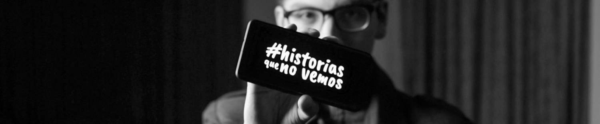

Aprendiendo a buscar ayuda y reconocer las emociones masculinas. Tomando la responsabilidad de nuestra salud mental.
Actualmente, Latinoamerica sufre de una ola de violencia contra la mujer. Existe una cantidad interminable de victimas que, ademas de no encontrar justicia, no puede protegerse de futuras agresiones.
Creemos que para cambiar esta situacion se deben actuar en todos los frentes para que se pueda tomar conciencia a todos los niveles. Desde el castigo a los agresores hasta la prevencion de los actos de violencia. Sin embargo, estamos conscientes que una prevencion que solo se concentre en el momento actual tiene menos posibilidades de trascender sus consecuencias positivas.
Es por eso que creemos que la normalización de la expresion emocional y sentimental masculina puede permitir que futuras generaciones lo consideren como algo normal y positivo. Debemos crear un ambiente que de la bienvenia a aquellos que requieren ayuda y no se juzgue de debil a quien lo necesita.
#historiasquenovemos es una iniciativa boliviana que busca la normalización de la expresión emocional y sentimental además del reconocimiento de la importancia de la salud mental de hombres en las sociedades latinoamericanas.
Buscamos romper los estereotipos de género que evitan que más hombres puedan buscar ayuda psicológica y puedan mostrarse vulnerables ante la sociedad sin ser juzgados.
Creemos que debemos tomar consciencia de la responsabilidad masculina de sanar heridas. Somos una extensión del movimiento feminista latinoamericano actual.
El movimiento #historiasquenovemos se rige por el respeto a todas las personas que forman parte de nuestra sociedad. Condenamos cualquier acto de violencia y buscamos evitarla para resguardar la vida de personas que sufren de ella.
Entendemos la responsabilidad masculina de romper los estereotipos de genero y animamos a todos que busquen ayuda psicológica si asi lo requieren. No buscamos la represion de emociones, en cambio, tenemos la esperanza que mientras mas hombres sean capaces de mostrarse vulnerables, podamos crear una mejor sociedad libre de violencia contra la mujer.
Compartimos historias de hombres que trabajaron en su salud mental y toman accion para romper los estereotipos de genero.
Compartimos recursos de salud mental, como libros y podcasts que tengan informacion relevante y sirvan de guia.
Somos una extension del movimiento feminista actual y apoyamos a las victimas de violencia para crear una sociedad mas segura.